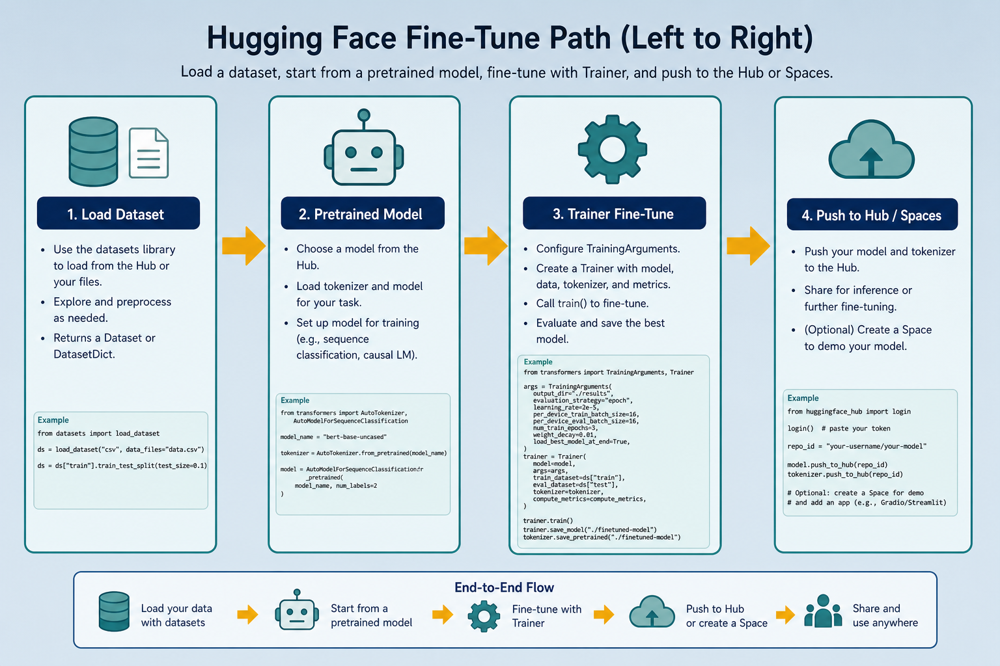

Hugging Face · dataset + Space → usable model
“GitHub for AI”: datasets, pretrained models, and Spaces demos. Don’t forge steel — borrow a good knife, sharpen it on your wood, then show others how it cuts.
Fastest path from idea to a shareable model
Skip scratch training
Download labeled data + pretrained weights; fine-tune lightly.
Where lab models live
Sentence-transformers, tokenizer cards, RAG embedding checkpoints.
Demo in minutes
Push to a Space → UI + optional API endpoint.
Three main pieces
Datasets
Labeled data in one line: load_dataset("imdb").
Hub models
BERT, GPT, ViT, MiniLM — fine-tune instead of training from zero.
Spaces
Gradio/Streamlit demos, optional GPU, simple API endpoint.
Also: model card + license · matching tokenizer · Trainer or your own loop. Read: notes/huggingface.md
Hub map: Datasets · Models · Spaces

One ecosystem: pull data, grab a checkpoint, fine-tune, then host a demo — without standing up infra yourself.
Fine-tune path on the Hub

Datasets → pretrained checkpoint → Trainer (or your loop) → push_to_hub → Spaces demo. A few thousand labels often beat a huge from-scratch train.
transformers + datasets
A few lines
AutoTokenizer + AutoModelForSequenceClassification + load_dataset — then Trainer or a PyTorch/TF loop.
Beats scratch
Leverage large-model knowledge. A few thousand labeled examples often beat a huge from-zero train.
Output is a checkpoint or endpoint ready for inference (train-infer). Same from_pretrained("org/name") string for model and tokenizer.
IMDb sentiment in a few lines
Vietnamese sentiment without training from zero
Search the Hub
Multilingual or vi checkpoint + a small labeled set.
Fine-tune 2–3 epochs
Free GPU on Kaggle / Colab is enough for a small clf. Typical: LR 2e-5, batch 16, mid–high 80s% val.
Push to a Space
Instant UI — you never trained a Transformer from random weights.
Fine-tune vs train from scratch
| From scratch | Fine-tune Hub model | |
|---|---|---|
| Data needed | Huge labeled set | Often thousands of examples |
| Compute | Weeks / big GPU farm | Hours on a free notebook |
| Risk | You invent everything | Read license + model card first |
| Tokenizer | You build vocab | Must match the checkpoint |
Deeper dive
Trainer vs raw loop
Trainer ≈ Keras fit for Transformers (device, eval, Hub upload). Raw loop wins for custom sampling / multi-loss.
Full vs PEFT
Full: all ~110M BERT params. LoRA (r=8, α=16): <1% trainable — prefer when data is small or many task variants.
Rates that work
Encoder: 2e-5–5e-5 + AdamW warmup. Head-only can use 1e-3 on the head. Too high on the stack → catastrophic forgetting.
Decision guide
| Situation | Prefer | Avoid / why |
|---|---|---|
| Standard text clf fine-tune | AutoModelForSequenceClassification + Trainer | BERT from random init — huge data/compute |
| <5k labels or tight VRAM | LoRA / PEFT or freeze encoder + head | Full 7B fine-tune “because bigger” |
| Shareable demo | Gradio Space → your Hub model | Only a local notebook nobody can open |
| Reproducible hand-in | Pin revision + save TrainingArguments | Floating main tags that move under you |
| Embeddings for RAG / search | sentence-transformers on the Hub | Raw LM CLS without pooling/normalization |
| Commercial product | Clear commercial license + private holdout | Research-only weights; Hub test as only metric |
Easy ways to go wrong
Ignoring the model card
Wrong license or unsafe intended use — especially commercial. Gated models need login + terms.
Tokenizer mismatch
Different vocab than the checkpoint corrupts every ID.
Full fine-tune when LoRA would do
Wasted GPU and money for small tasks.
Peeking at Hub test
Keep a private holdout after exploring public splits. Wrong num_labels silently mis-shapes the head.
HF model · Kaggle GPU · lab demo
Hub checkpoint
Pretrained weights + tokenizer. Pin revision for reproducibility.
Kaggle notebook
Free GPU hours to fine-tune.
Export → demo
Checkpoint into inference / Spaces / sentiment apps.
From Hub to usable model
Data source and runtime partner for pytorch-training / tensorflow-training.
Borrow,
sharpen, share.
notes/huggingface.md — then kaggle.md for free GPU, or pytorch-training for the loop underneath.
Open note →